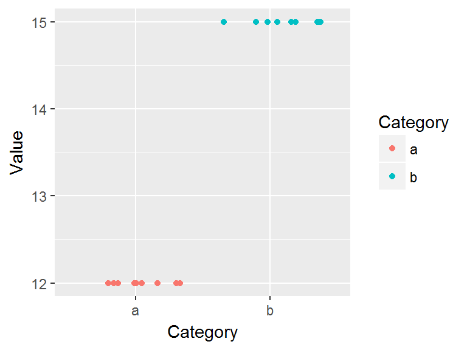
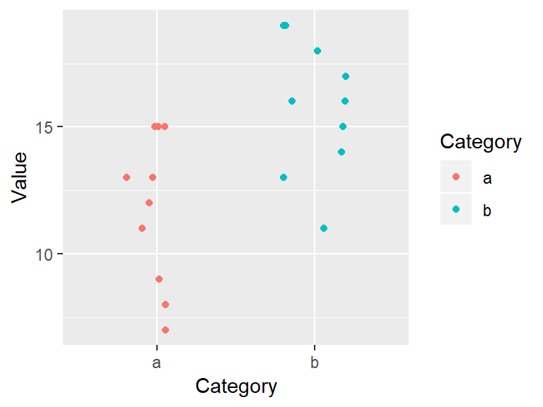
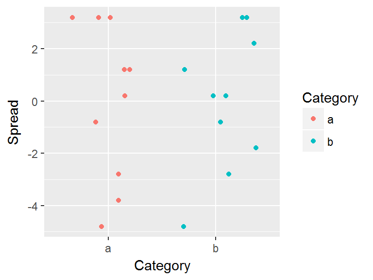

Visualizing univariate distributions
This tutorial makes use of the following R package(s): dplyr, tidyr, ggplot2.
This material can be read in conjunction with sections 2.1 and 2.3 of Cleveland’s book1.
Introduction
Let’s create two batches of numbers, a and b:
a <- rep(12, 10)
b <- rep(15, 10)
df <- data.frame(a,b)How do the two batches differ?
| a | b |
|---|---|
| 12 | 15 |
| 12 | 15 |
| 12 | 15 |
| 12 | 15 |
| 12 | 15 |
| 12 | 15 |
| 12 | 15 |
| 12 | 15 |
| 12 | 15 |
| 12 | 15 |
If the difference wasn’t obvious from the table view we can create a jittered point plot from the data.
# To plot across categories, we need the data in a long (tidy) form
library(tidyr)
library(ggplot2)
dfl <- gather(df, key=Category, value=Value)
ggplot(dfl, aes(y = Value, x = Category, col=Category)) +
geom_jitter(position = position_jitter(height = 0, width=0.4))
It’s clear that both batches differ by their uniform values, batch a is made up of the identical numbers, 12, and batch b is made up of a different set of identical values, 15. Note that because so many values overlapped, we made use of the geom_jitter() function which randomly jitters the data about their actual location.
Now let’s compare a more complicated batch of numbers.
# Randomly pick 10 values from a uniform distribution
set.seed(23)
a <- round(runif(10, 5, 15))
b <- round(runif(10, 10, 20))
# Create wide and long data frames
df <- data.frame(a,b)
dfl <- gather(df, key=Category, value=Value)| a | b |
|---|---|
| 11 | 19 |
| 7 | 17 |
| 8 | 14 |
| 12 | 13 |
| 13 | 18 |
| 9 | 11 |
| 15 | 15 |
| 15 | 16 |
| 13 | 19 |
| 15 | 16 |
ggplot(dfl, aes(y = Value, x = Category, col=Category)) +
geom_jitter(position = position_jitter(height = 0, width=0.4))
So how do these batches differ? They seem to differ by their center value. For example, each batch’s mean is:
library(dplyr)
dfl %>% group_by(Category) %>% summarize(mean = mean(Value) )# A tibble: 2 x 2
Category mean
<chr> <dbl>
1 a 11.8
2 b 15.8The center value (aka location), is one summary statistic we can use to compare batches. Another property of a batch that we might also want to compare is its distribution (aka spread). For example, does the spread between the two batches differ as well? It’s difficult to tell from the above plot given that the batches are offset, so we’ll level the batches by subtracting the means from their respective batches.
# Subtract the batch mean from each batch value
dfl2 <- dfl %>%
group_by(Category) %>%
mutate(Spread = Value - mean(Value))
# Now plot the leveled batches
ggplot(dfl2, aes(y = Spread, x = Category, col=Category)) +
geom_jitter(position = position_jitter(height = 0, width=0.4))
Removing the location (or mean in our example) from each value facilitates our comparison of both spreads. From our working example we can, at best, say that the batches share the same range. But a spread can be characterized in many more ways than by its range. Next, we’ll focus on three exploratory tools that will help us explore and quantify a dataset’s spread. These are the histogram, the boxplot and the quantile plot.
Histograms
A histogram bins the values (usually in equal sized bins) and plots the frequency in which each bin is filled. For example, to create a histogram of batch a where each bin size covers one unit, we type:
ggplot(df, aes(x=a)) + geom_histogram(breaks = seq(6.5,16.5,by=1), colour="white")
Here, we are explicitly defining the bin width as 1 unit and the range as 6.5 to 16.5 via the parameter breaks = seq(6.5,16.5,by=1). The colour parameter specifies the outline color. To change the fill color use the fill parameter instead. In our example, we have one value that falls in the first bin (bin ranging from 6.5 to 7.5), another value that falls in the second bin (bin value ranging from 7.5 to 8.5) and so on up to the second to last bin which has 3 values falling in it (bin covering the range 14.5 to 15.5). No values fall in the 15.5 to 16.5 bin range.
We can modify the width of each bin. For example, to have each bin cover two units instead of one, type:
ggplot(df, aes(x=a)) + geom_histogram(breaks = seq(6.5,16.5,by=2), colour="white")
You’ll note that changing bin widths can alter the look of the histogram, this is particularly true when plotting large batches of values.
You can also opt to have the function determine the bin ranges by simply specifying the number of bins using the bin= parameter:
ggplot(df, aes(x=a)) + geom_histogram(bins=12, colour="white")
Boxplots
A boxplot is another popular plot used to explore distributions. In ggplot2 we use the geom_boxplot() function as in,
ggplot(df, aes(x=1, y=a)) + geom_boxplot() +
xlab(NULL) + theme(axis.text.y=element_blank()) +
coord_flip()
Note that the coord_flip() function flips the boxplot on its side (the boxplot is normally plotted upright). The geom_boxplot function requires that both x and y axes be mapped a variable; usually, the x-axis is assigned a category, but since we are looking at a unique batch, we artificially map a value of 1 to the x-axis (we could have used any value). This requires that we mask the x-axis’s label and text so as not to confuse the reader using the options xlab(NULL) + theme(axis.text.y=element_blank()).
The following figure describes the anatomy of a boxplot.

The boxplot provides us with many meaningful pieces of information. For example, it gives us a center value: the median. It also tells us where the middle 50% of the values lie along the full range of values (in our example, approximately 50% of the values lie between 9.5 and 14.5). This range is referred to as the interquartile range (or IQR for short). Note that this is only an approximation given that some datasets may not lend themselves well to defining exactly 50% of their central values. For example, our batch only has four data points falling within the interquartile range because of tied values.
The long narrow lines extending beyond the interquartile range are sometimes referred to as whiskers and are either 1.5 times the width between the median and the nearest interquartile value or the most extreme value, whichever comes first.
Sometimes, you will encounter values that fall outside of the lower and/or upper adjacent values (aka whiskers); such values are often labeled as outliers.
Not all boxplots are created equal!
Not all boxplots are created equal. There are many different ways in which quantiles can be defined. For example, some will compute a quantile as \(( i - 0.5) / n\) where \(i\) is the nth element of the batch of data and \(n\) is the total number of elements in that batch. This is the method implemented by Bill Cleveland and we will refer to this method as Cleveland’s quantile method. This also happens to be the method implemented by the base’s boxplot function which explains the different boxplot output in our working example:
boxplot(a, horizontal = TRUE, add=TRUE)
The upper and lower quartiles differ from those of ggplot since the three 15 values (these are the maximum values in batch a) end up falling inside the interquartile range following the aforementioned quantile definition. This eliminates any upper whiskers. In most cases, however, the difference will not matter as long as you adopt the same boxplot procedure when comparing batches.
Quantile plots
A quantile plot generates a point plot that joins the quantile to each value in a batch. The boxplot is a special case of the \(f\)-quantile function in that it only returns the 1st, 2nd (median) and 3rd quartiles. The \(f\)-quantile returns the \(full\) range of quantile values. The quantile is directly related to the concept of a percentile: it identifies the fraction of the batch of numbers that is less than a value of interest. The following figure describes the anatomy of a quantile plot.

The x-axis shows the \(f\)-values: the full range of fractions. The y-axis is the \(f\)-quantile, \(q(f)\), which shows the sorted batch values (from smallest to largest). The points in the plot link the values on the y-axis to the \(f\)-values on the x-axis. For example, the \(f\)-value of 0.25 (~the 25th percentile) is associated with the \(q(f)\) value of 8 meaning that 25% of the values in the dataset have values of 9 or less. Likewise, the \(f\)-value of 0.5 (the median) is associated with a \(q(f)\) value of 12.5 implying that half of the dataset’s values are 12.5 or less. The boxplot is shown alongside the quantile plot to highlight the analogy.
Computing the \(f\)-quantile
Computing \(f\) requires that the batch of numbers be ordered from smallest to largest.
a.o <- sort(a)
a.o [1] 7 8 9 11 12 13 13 15 15 15The concept of sorting values may seem benign, but it is fundamental to many EDA procedures that require robust techniques.
With the numbers sorted, we can proceed with the computation of \(f\) following Cleveland’s method:
\[ f_i = \frac{i - 0.5}{n} \]
where \(i\) is the nth element of the batch of data and \(n\) is the total number of elements in that batch. As noted in the Boxplots section, there are many ways one can compute a quantile, however, the differences may not matter much.
For each value in a, the \(f\) value is thus:
i <- 1 : length(a)
f.val <- (i - 0.5) / length(a) # Compute the f-value
a.fi <- data.frame(a.o , f.val)Note that in the last line of code, we are appending the ordered representation of a to f.val given that f.val assumes an ordered dataset. The data frame a.fi should look like this:
| a.o | f.val |
|---|---|
| 7 | 0.05 |
| 8 | 0.15 |
| 9 | 0.25 |
| 11 | 0.35 |
| 12 | 0.45 |
| 13 | 0.55 |
| 13 | 0.65 |
| 15 | 0.75 |
| 15 | 0.85 |
| 15 | 0.95 |
It may be desirable at times to find a value associated with a quantile that might not necessarily match an exact value in our batch. For example, there is no value in a associated with a quantile of \(0.5\); this is because we have an even number of values in our dataset. The solution is to interpolate (or extrapolate) a value based on a desired quantile. The quantile() function does just that. For example, to find the value associated with a quantile of \(0.5\):
quantile( a, 0.5) 50%
12.5 If we want to get quantile values for a range of fractions, simply wrap the values with the c() function:
quantile( a, c(0.25, 0.5, 0.75)) 25% 50% 75%
9.5 12.5 14.5 The quantile function is designed to accept different quantile algorithms. To see the list of algorithm options, type ?quantile at a command prompt. By default, R adopts algorithm type = 7. To adopt Cleveland’s algorithm, set type = 5. E.g.:
quantile( a, c(0.25, 0.5, 0.75), type = 5) 25% 50% 75%
9.0 12.5 15.0 Note the difference in the upper quartile value.
Creating a quantile plot
A batch’s quantile is best viewed as a plot where we plot the batch values as a function of the \(f\)-values:
ggplot(a.fi, aes(x=f.val, y=a.o)) + geom_point() + xlab("f-value")
If you did not want to go through the trouble of computing the \(f\)-values and the dataframe a.fi, you could simply call the function stat_qq() as in:
ggplot(df, aes(sample=a)) + stat_qq(distribution = qunif) + xlab("f-value")
Note the slight change in mapping values to the aes() function: sample = a where a is the (unsorted) variable being plotted.
Cleveland, William S. Visualizing Data. 1993. Hobart Press.↩
 Manny Gimond (2018)
Manny Gimond (2018)